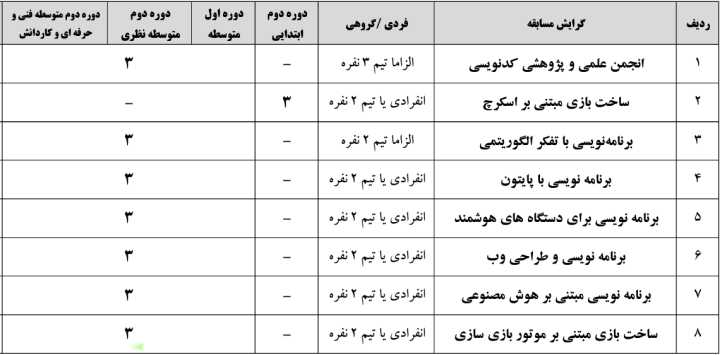
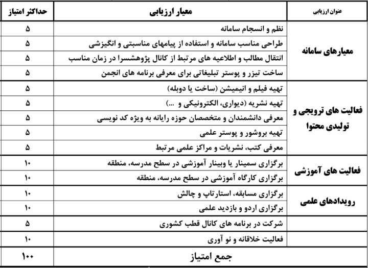
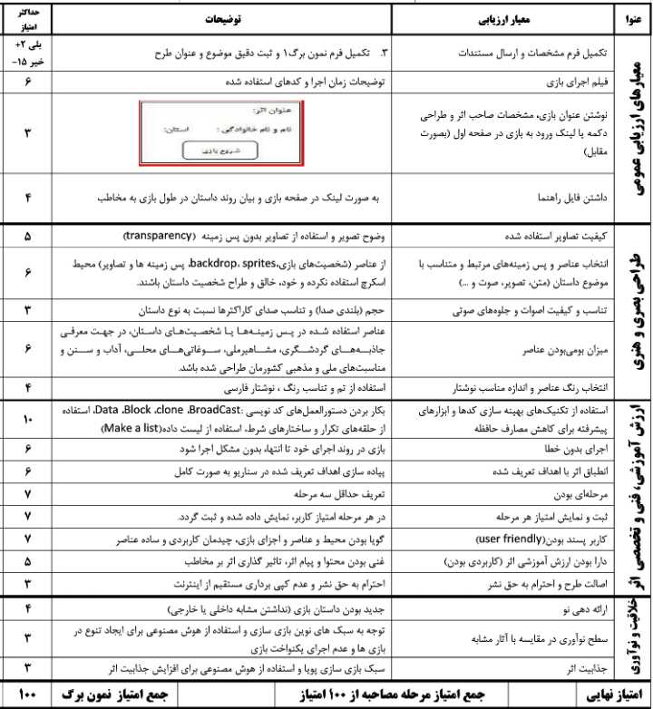
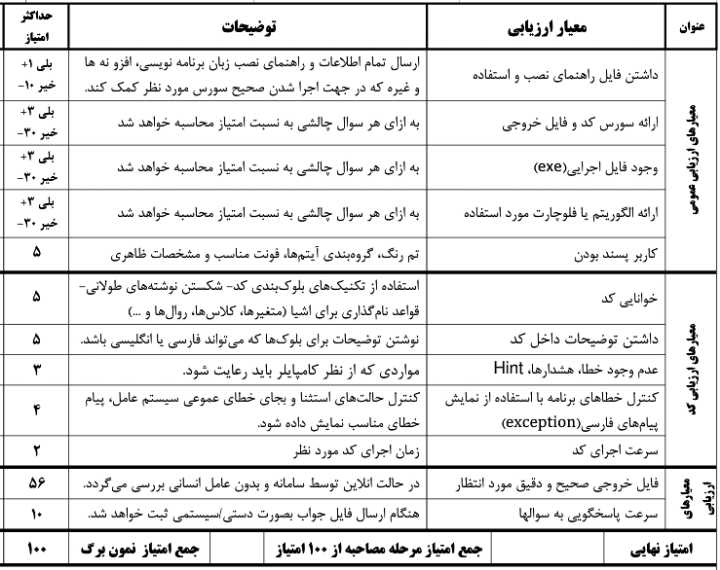

stateDiagram-v2
direction RL
classDef fontStyle font-family:vazirmatn
field: کد نویسی
Primary: ابتدایی
Highschool: متوسطه
gr1: انجمن علمی و پژوهشی کدنویس
gr1act1: فعالیتهای ترویجی و تولید محتوا
gr1act2: نشریه، روزنامه دیواری، فیلم و پادکست
gr1act3: برگزاری دوره ها و کارگاههای آموزشی
gr1act4: فعالیتهای خلاقانه
gr1act5: معرفی کتاب، نشریه
gr1act6: دعوت از متخصصان
gr2: ساخت بازی مبتنی بر اسکرچ
gr3: برنامه نویسی با تفکر الگوریتمی
gr4: برنامه نویسی با پایتون
gr5: برنامه نویسی برای دستگاههای هوشمند
gr6: برنامه نویسی و طراحی وب
gr7: برنامه نویسی مبتنی بر هوش مصنوعی
gr8: ساخت بازی مبتنی بر موتور بازی سازی
field --> Primary: دوره دوم
field --> Highschool: دوره اول و دوم
Primary --> gr2: ۱ یا ۲ نفره
Highschool --> gr1: الزاما ۳ نفره
gr1 --> gr1act1
gr1 --> gr1act2
gr1 --> gr1act3
gr1 --> gr1act4
gr1 --> gr1act5
gr1 --> gr1act6
Highschool --> gr3: الزاما ۲ نفره
Highschool --> gr4: ۱ یا ۲ نفره
Highschool --> gr5: ۱ یا ۲ نفره
Highschool --> gr6: ۱ یا ۲ نفره
Highschool --> gr7: ۱ یا ۲ نفره
Highschool --> gr8: ۱ یا ۲ نفره
class field, Primary, Highschool, gr1, gr2, gr3, gr4, gr5, gr6, gr7, gr8 fontStyle
مسابقات کدنویسی
معرفی مسابقات
شرایط عمومی
- هر تیم مجاز به شرکت در بیش از یک گرایش
- ارائه آثاری که در سنوات گذشته کسب رتبه شدند مجاز نیست.
- ارائه آثاری که کسب رتبه نشدند با رفع اشکلات و بهبود مجاز به شرکت هستند.
- تسلط کامل همهی اعضای تیم به اثر ارائه شده.
- رعایت ضوابط جشنواره برحسب ماده ۸۵ آیین نامه اجرایی مدارس
- منابع در دسترس در کانال
codenevisiدر شاد
گرایشها

انجمن علمی و پژوهشی کد نویسی
- شرایط شرکت کنندگان:
- تمام دانش آموزان دورهها اول و دوم متوسطه
- تشکیل انجمن کد نویسی در مدارس
- الزاما تیم ۳ نفره
- اعضای تیم باید از یک منطقه، دوره و جنسیت باشند
- شرایط اختصاصی اثر:
- ارائه مستندات و گزارشات فعالیتهای انجمن در:
- ایجاد کانال در پیام رسانهای داخلی شاد یا ایتا
- ایجاد وبلاگ در سرویسهای داخلی وبلاگ نویسی
- ارائه مستندات و گزارشات فعالیتهای انجمن در:
- فعالیتها:
- ترویجی و تولید محتوا
- نشریه، روزنامه دیواری، فیلم و پادکست با موضوع کد نویسی
- برگزاری دوره ها و کارگاههای آموزشی برای دانش آموزان
- فعالیتهای خلاقانه
- معرفی کتاب، نشریه و کمک به تجهیز و غنی سازی کتابخانه مدرسه
- دعوت از متخصصان جهت برگزاری دورههای آموزشی
- مجازی یا حضوری

ساخت بازی مبتنی بر اسکرچ
- شرایط شرکت کنندگان
- تمام دانش آموزان دوره دوم ابتدایی
- انفرادی یا تیم ۲ نفره
- اعضای تیم باید از یک منطقه، دوره و جنسیت باشند
- شرایط اختصاصی اثر
- بازیهای رایانهای:
- بازی رایانهای مرتبط با مفاهیم آموزشی کتب درسی به همراه ساخت آزمون
- بازیهای آموزنده و هدف دار فکری
- افزایش مهارتهای اجتماعی و فرهنگی در زمینه سوالات چالشی مطابق با فرهنگ جامعه
- فیلم اجرای بازی به مدت حداکثر ۳ دقیقه و حجم حداکثر ۱۵ مگابایت شامل توضیح نحوهی اجرا و توضیح کدها توسط دانش آموزان تهیه شود.
- بازیهای رایانهای:

برنامه نویسی با تفکر الگوریتمی
- شرایط شرکت کنندگان:
- تمام دانش آموزان دورهها اول و دوم متوسطه
- الزاما تیم ۲ نفره
- اعضای تیم باید از یک منطقه، دوره و جنسیت باشند
- شرایط اختصاصی اثر:
- انتخاب یکی از زبانهای برنامه نویسی
- طرح چند سوال چالشی طبق زمانبندی تعیین شده
- ارائه نمونه ورودی برنامه به صورت فایل و گرفتن خروجی از برنامه که همان پاسخ است و بارگذاری خروجی به همراه سورس برنامه در سامانه آنلاین
